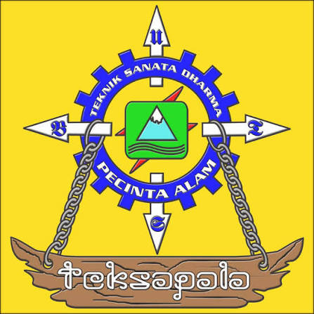

UKF TEKSAPALA
Wadah mahasiswa untuk mengembangkan keberanian, kemandirian, kerja sama, dan kepedulian terhadap alam.
Kenali Teksapala
Mengenal UKF Teksapala
UKF Teksapala merupakan wadah mahasiswa yang memiliki minat terhadap kegiatan alam bebas, petualangan, dan lingkungan.
Teksapala mengajarkan tanggung jawab, kerja sama, kedisiplinan, keberanian, dan kepedulian terhadap alam.
Aktivitas yang dilakukan
Belajar dasar kegiatan alam bebas dan keselamatan.
Melatih fisik, mental, dan kerja sama.
Melatih kemandirian dan kebersamaan.
Belajar membaca peta dan menentukan arah.
Meningkatkan kepedulian terhadap lingkungan.
Menambah pengalaman melalui petualangan.
Profil mahasiswa
Nama: Geby Emilia Dolla Br Tarigan
NIM: 255314143
Program Studi: Informatika
Angkatan: Diksar XIX
🥾 Mendaki
⛺ Berkemah
📷 Fotografi
Data anggota
| No | Nama Anggota | Angkatan |
|---|---|---|
| 1 | Geby Emilia Dolla Br Tarigan | Diksar XIX |
| 2 | Icha Olivianti Welin | Diksar XIX |
| 3 | Nuizah Bilqis Salsabila | Diksar XIX |
| 4 | Nova Mila | Diksar XIX |
| 5 | Ratna Cempaka Br Ginting | Diksar XIX |